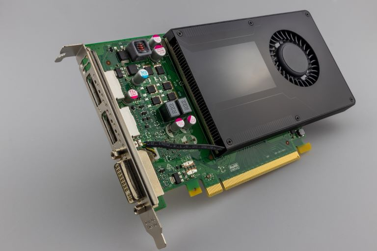
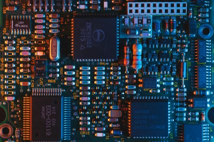
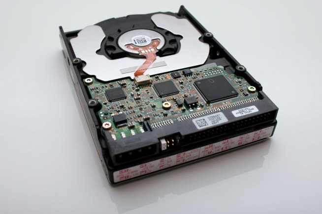

Motherboard - Basics
What Is a Motherboard? Definition, Types, Components, and Functions
A motherboard is a circuit board inside computers that stores electrical components and helps them communicate.
It is the circuit board that connects all of your hardware to your processor, distributes electricity from your power supply, and defines the types of storage devices, memory modules, and graphics cards (among other expansion cards) that can connect to your PC.
A computer’s motherboard is typically the largest printed circuit board in a machine’s chassis. It distributes electricity and facilitates communication between and to the central processing unit (CPU), random access memory (RAM), and any other component of the computer’s hardware. There is a broad range of motherboards, each of which is intended to be compatible with a specific model and size of the computer.
It is typically made of fiberglass and copper.
Since different kinds of processors and memories are intended to function best with certain types of motherboards, it is difficult to find a motherboard that is compatible with every type of CPU and memory. Hard drives, on the other hand, are generally compatible with a wide variety of motherboards and may be used with most brands and types.
Types of Motherboards
To comprehend what motherboards are and what they do, we must first examine their various types and specifications.
1. Advanced Technology (AT) motherboard
Due to their larger physical dimensions (which can be measured in hundredths of millimeters), these motherboards do not work properly with computers that fall into the category of smaller desktops. A larger physical size makes it more difficult to install new hardware drivers.
The power connections on these motherboards are in the form of sockets and plugs with six prongs each. Due to the difficulty in recognizing these power connections, users often have issues while trying to connect and operate them. In the 1980s, motherboards of this sort were all the rage, and they continued to be manufactured far into the 2000s.
2. Standard ATX motherboard
ATX is an enhanced version of the AT motherboard that Intel created in the 1990s. Its name means “Advanced Technology Extended,” and its initials stand for “advanced technology.” Unlike AT, it is much more compact and enables the associated components to be interchanged. The connection elements have witnessed significant progress and development.
3. Micro ATX motherboard
The length and width of these motherboards, measured in millimeters, are also 244 mm (size metrics will differ as per the manufacturer). This motherboard has fewer ports and slots than the Standard ATX board.
Users who do not want excessive connections and subsequent upgrades, like adding more RAM, an extra GPU, or other Peripheral Component Interconnect (PCI) cards, are better suited for this kind of motherboard than others.
This motherboard may be installed in any case with enough space to accommodate 244 mm by 244 mm. It can also be installed in larger cases that are compatible with Standard ATX or eXtended ATX motherboards.
4. eXtended ATX motherboard
The dimensions of this motherboard are 344 millimeters by 330 millimeters (dimensions will differ with different manufacturers). This motherboard supports a single or a twin CPU configuration and has up to eight RAM slots.
Additionally, it has a higher number of PCIe and PCI slots, which may be used to add PCI cards for a wide range of applications. Workstations and servers are both able to use this hardware. There is sufficient room on all eXtended ATX motherboards, making them ideal for desktop computers, thanks to the significant space provided for airflow and the attachment of various components.
5. Flex ATX motherboard
These ATX Form Factor mainboards do not enjoy the same degree of popularity as their ATX Form Factor counterparts. They are the ones within the ATX family that are considered the most compact. They were designed to occupy a minimal amount of space and had a minimal price tag. Flex ATX is a modification of mini ATX that Intel created between 1999-2000. It is a motherboard standard.



6. Low-Profile EXtended (LPX) motherboard
In comparison to previous iterations, this has two significant enhancements. The first change was that the output and input ports were moved to the rear of the device, and the second change was the addition of a riser card, which enables the device to have additional slots and makes it easier to attach components.
There is an implementation of some of these functionalities on the AT motherboard. The primary drawback of this board is that it does not have any accelerated graphic port (AGP) ports, resulting in a connection to PCI that is made directly. The new low-profile extended (NLX) boards are where issues present in these motherboards have been addressed.
7. BTX motherboard
Balanced technology extended, abbreviated as BTX, is a strategy developed to fulfill the requirements of emerging technologies, which call for increased power consumption and, as a result, emanate more heat. During the middle of the 2000s, Intel ceased the future production of BTX boards to concentrate on low-power CPUs.
8. Pico BTX motherboard
Given their diminutive size compared to a typical motherboard, these boards are called Pico. Even though the upper half of the BTX is shared, support is provided for two expansion slots. Its distinguishing characteristics are the half-height or riser cards, and it is designed to meet the needs of digital applications.
9. Mini ITX motherboard
It is important to note that there is no regular-sized version of the information technology extended (ITX) motherboard. In its place, the motherboard has been downsized into a more compact form than in earlier iterations. It was developed in the 2000s, and its measurements are 17 by 17 centimeters.
Due to its reduced power consumption and quicker cooling capabilities, it is primarily used in computers with a small form factor (SFF). Given that it has a relatively low level of fan noise, the motherboard is the one that is recommended the most for use in home theater systems because it will enhance the overall performance of the system.
10. Mini STX motherboard
The name “Intel 5×5” was initially given to the motherboard now known as the Mini-STX, which stands for mini socket technology extended. Although it was introduced in 2015, the motherboard has dimensions of 147 millimeters by 140 millimeters. This converts to a length of 5.8 inches and a width of 5.5 inches; hence, the 5×5 name is rather misleading.